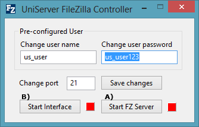
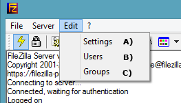
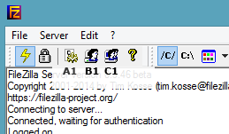
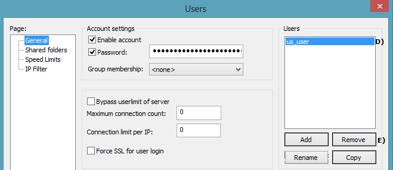
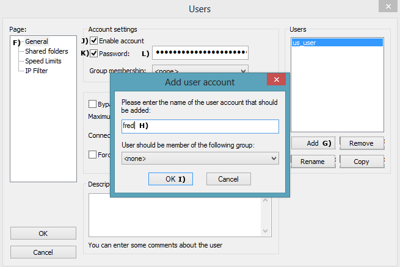

|
|
FileZilla basic configuration |
This page covers creating, deleting and modifying FileZilla Server user accounts although written specificity for Uniform Server the same principals apply equally to a standard installation of FileZilla.
Run FileZilla - Portable mode
To configure The FileZilla server always run the server in portable mode. If the server is currently running as a service stop and uninstall the FileZilla service as follows:
Stop and uninstall service
- Navigate to the folder \fz_server\fz_portable
- Locate file zilla_service_stop.bat
- Windows Vista, Windows 7, Windows 8 or Windows 10
- Require enhanced administration rights:
- Right click on file zilla_service_start.bat select zilla_service_stop.bat
- Displays "Service stopped and uninstalled" press any key, closes command window.
Start Portable FileZilla and administration Interface
|
 |
FileZilla Admin Interface Sections
The admin interface provides access to three server sections setting, users and groups. Two methods are available to select these, either via the drop down menu or the top row of icons.
|
 |
|
 |
Delete a User
|
If you wish you can delete the pre-configured user. The following shows how to delete any user.
Note: Although you can delete the pre-configured user it is recommended to leave it. Once the password has been changed it is save to use. |
 |
Add a User
|
To add a new user we first create a new user and set a password. Create a user:
|
 |
|
After creating a user you must assign a home folder (directory) to that user. Assign a folder to user:
|

|
Quick Test
Assuming you are running the server on your local machine you can quickly test the account.
Type the following into your browser:
- ftp://localhost/ a pop-up is displayed enter name fred and password you entered in step L) above.
- A page is displayed showing files and folders contained in your shared folder P).
Local network access
Anyone on your local network can access the ftp server by typing ftp://your_ip_address into their browser; they will be challenged for a user name and password.
To find your IP address use a command prompt:
- Open command prompt start > run > type in cmd > clik OK
- In the command window type ipconfig /all
- Look for your IP address. If you are using a wireless network the address will be similar to this 192.168.1.6
- While in the command window look for Host Name (my PC name is mpg2) the name of your PC
(note sometimes this is not set-up)
A user can use either HostName or IP address to access your FTP server for example:
A user on your network would then type ftp://192.168.1.6/ Or ftp://mpg2/
Neither of the above is very easy on the eye an alternative is to get each user to add a memorable name to their hosts file.
For example under localhost add a line as shown below:
127.0.0.1 localhost
192.168.1.6 my_ftp_server
They must substitute 192.168.1.6 for your IP address and replace my_ftp_server with a memorable name.
Internet access
To access your FTP server from the Internet a user would type the following into a browser:
ftp://your_domain_name/ alternatively ftp://your_external_ip_address
On-line help:
Testing an FTP server for online access can be problematic however there are two useful online services that can help:
- To find your external IP address use: Whatsmyip
- To test FTP access use: Gene6 FTP Server Test, its free for anyone to use.
Ports:
If you have a direct Internet connection there should be no problems with access.
However if you are using a router you need to forward ports 20 and 21 every router is different hence pay a visit to PortForwrd for detailed instructions.
Problems
You may be unlucky and have a service provider that blocks the common FTP ports. In this event try changing the ports. Do not allow your firewall to block Internet access otherwise you will need to manually enable access.
FTP Clients
Using a browser allows for quick testing however an FTP client offers more flexibility my personal favourite is FireFTP running on Firefox and FileZilla Portable Client. It’s a personal taste hence choose one that suits your needs.